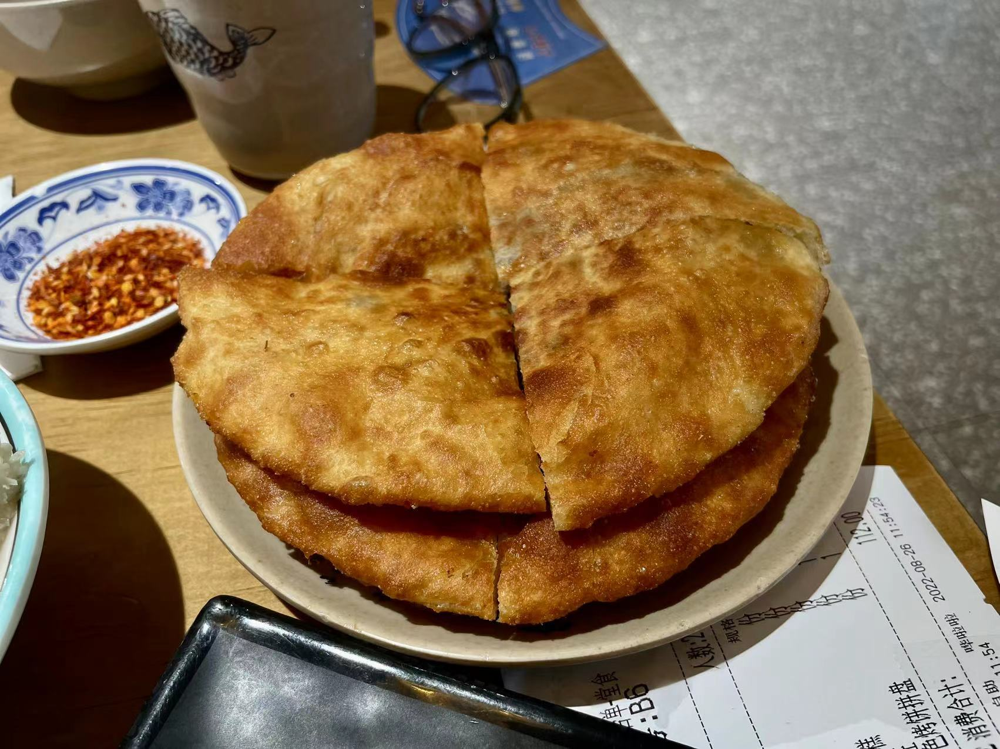

This is a map for you to explore more about Chinese Food

Rock-footed beef is a traditional and famous dish in Leshan City, Sichuan Province, belonging to Sichuan cuisine. Its main raw materials are beef, beef tongue, beef liver, beef spinal cord, beef tendon and so on. The finished dish is delicious, smooth and delicious
Beef charcuterie is a local specialty snack in Chengdu, Sichuan. It is mainly made of butter and crispy noodles to make skin-wrapped beef stuffing, made into cakes, and then fried. The beef pancake is golden in color and crispy and delicious.

Bingfen has the traditional Bashu flavor. Bingfen is a summer delicacy of Sichuan villagers, and it is very popular because of its smoothness, transparency, coolness, deliciousness and low price!

Xiaolongbao, originally called Xiaolongmantou, is a famous traditional snack of the Han nationality in China. It first appeared in Changzhou, Jiangsu Province during the Tongzhi period of the Qing Dynasty.
Tomato brisket pot is a dish, the main ingredients are tomato and brisket. Among them, tomato has the effect of adjusting gastrointestinal function and reducing cholesterol content. It is also rich in vitamin A, vitamin C, vitamin B1, vitamin B2, carotene and calcium, phosphorus, potassium, magnesium, iron, zinc, copper and iodine, etc. Various elements.
Hotpot, known as "Antique Soup" in ancient times, is named after the "gu-dong" sound made when food is put into boiling water.